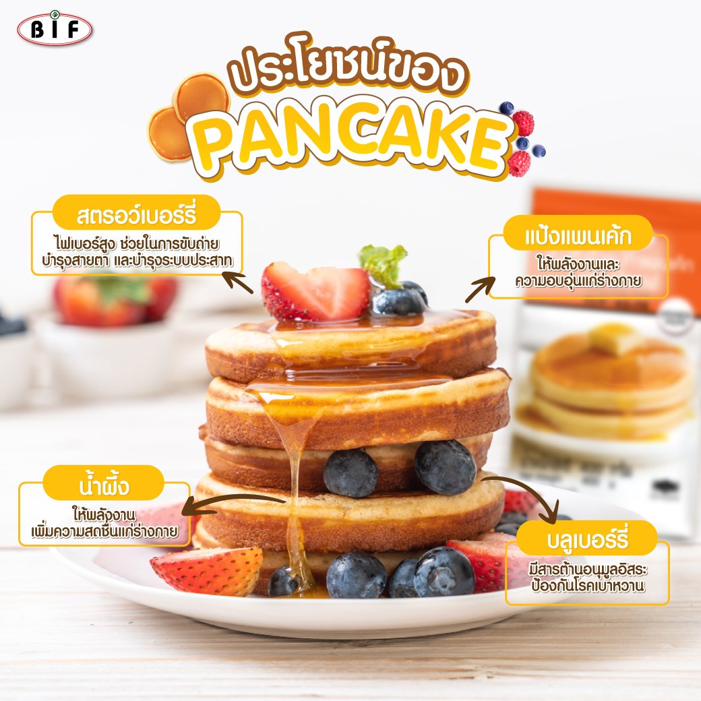

|
.png) |
1. แป้ง (Flour)
โดยทั่วไปเราจะใช้แป้งเค้ก (Cake Flour) และแป้งอเนกประสงค์ (All-Purpose Flour)ในการทำเค้ก
แป้งเค้ก (Cake Flour) นุ่ม เบา มีสีขาวบริสุทธิ์ มัโปรตีนอยู่น้อยทำให้เนื้อเค้กละเอียดเบา ไม่หยาบ แต่ขณะเดียวกันก็ร่วนง่ายกว่าแป้งอเนกประสงค์
ส่วนแป้งอเนกประสงค์ (All-Purpose Flour) สามารถใช้ทำเค้กได้เช่นกัน แต่เหมาะกับเค้กที่ต้องการความเหนียวหรือเนื้อแน่นบ้างเล็กน้อย เช่น บราวนี่ บัตเตอร์เค้ก หรือเค้กกล้วยหอม
แป้งข้าวโพด (Cornstarch) ใช้สำหรับเพิ่มความหนาของส่วนผสมบางอย่าง เช่น ซอส คัสตาร์ด พุดดิ้ง ครีมพาย และช่วยให้ส่วนผสมคงรูปเมื่อเย็นขึ้น
2. น้ำตาล (Sugar)
ในแง่ของการทำเค้ก หรือเบเกอรี่ทั่วไป น้ำตาลเป็นมากกว่าสารให้ความหวาน หน้าที่ของน้ำตาลมีหลายอย่างที่มีผลกับการทำเค้ก เช่น
– ทำให้เค้กชุ่มชื้น
– ช่วยให้เค้กสีสวย
– ทำให้เก็บได้นานขึ้น
– ช่วยในการตีส่วนผสม เช่นตีเนยกับน้ำตาล หรือตีไข่กับน้ำตาล
น้ำตาลมีหลายชนิด ดังนี้
น้ำตาลทราย (Granulated sugar) เป็นเกล็ดน้ำตาล ถ้าละเอียดหน่อยจะเรียกว่า น้ำตาลเบเกอรี่
น้ำตาลไอซิ่ง (Powdered sugar) เป็นผงคล้ายแป้ง ไม่หวานเท่าน้ำตาล
น้ำตาลทรายแดง (Brown sugar) เป็นสีน้ำตาล เหมาะกับการทำเค้กบางชนิดที่ต้องการรสขมนิดๆเช่นเค้กขิง เค้กช็อกโกแล็ต และการทำคาราเมล หรือซอสต่างๆ
น้ำเชื่อม คือน้ำตาลในรูปของน้ำ รวมทั้ง น้ำผึ้งด้วย
3. ไขมัน (Fat)
เช่น เนย เนยขาว มาร์การีน รวมทั้งน้ำมันด้วย หน้าที่ของไขมันในการทำเค้ก คือ
– ทำให้เค้กนุ่มนวลเนื้อละเอียด
– เพิ่มรสชาติมันเนยและความชุ่มชิ่น
– ทำให้เก็บได้นานขึ้น
– ช่วยเพิ่มความอยู่ตัวให้เค้ก
เนยทำให้เค้กรสชาติดีที่สุด แต่เนยขาวและมาร์การีนช่วยในการตีขึ้นฟูและการอยู่ตัวของเค้กในขั้นตอนการตีเนยกับน้ำตาล ในขณะที่น้ำมันช่วยให้เค้กชุ่มชิ้นที่สุด
4. นม (Milk)
นอกจากเพิ่มรสชาติให้เค้กแล้ว ยังช่วยลดความเหนียวของเค้กเมื่อใช้แทนน้ำในส่วนผสม
5. ไข่ (Eggs)
ส่วนใหญ่เรามักจะใช้ไข่ไก่ในการทำเค้ก ซึ่งควรเลือกที่สดที่สุด และใช้เบอร์ 1 หรือแล้วแต่ที่สูตรกำหนด หน้าที่ของไข่มีหลายอย่าง เช่น
– ช่วยให้โครงสร้างกับเค้กเวลาอบ
– ช่วยให้ขึ้นฟู เมื่อตีกับน้ำตาล
– ช่วยเพิ่มความชุ่มชื้น โดยเฉพาะส่วนไข่แดง
– เพิ่มรสชาติให้เค้ก
– เพิ่มสีที่น่ารับประทาน
